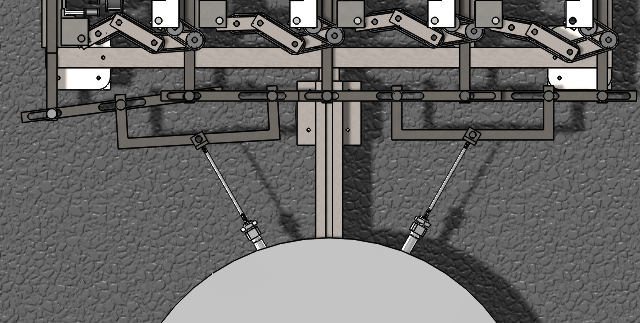
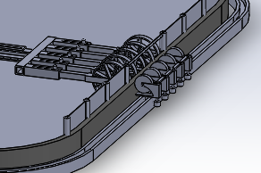
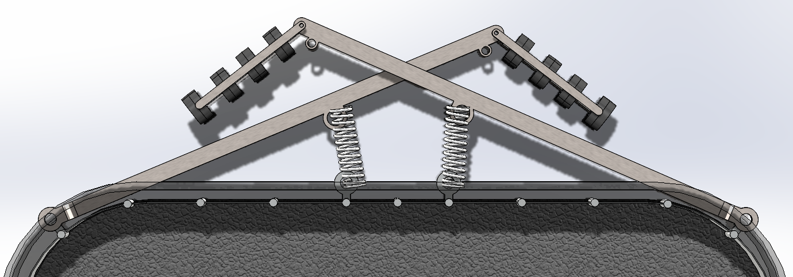
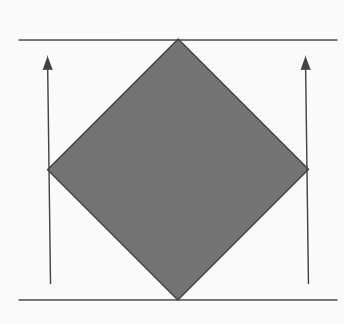

Omnidirectional Treadmill Design
Introduction
An omnidirectional treadmill is like a normal treadmill, but instead of a unidirectional motion of one, it allows the user to have 360 degrees of movement and experience a more simulated environment which is useful in fitness and VR games. However, the current omnidirectional treadmills in the market are either non-motorized or are large and expensive. The Infinadeck which is advertised as the only true omnidirectional treadmill in the industry costs $60,000.

Functionality
Wheels on either side spin and rotate the belt similarly to how a normal treadmill would work. The movement of each wheel is connected through a belt so there is only one driving motor at the end moving one set of wheels. These wheels are on a slot so they can slide back and forth to apply pressure to the belt.
To make the belt move in all directions pistons first pull the wheels in and then both of the bars holding the wheels spin across the perimeter of the square to the angle of movement. To make sure that the wheels can connect with the belt in all directions both the bar holding the wheel and the main bar can expand. All of the wheels are controlled by a separate bar so the wheels can shape themselves around each corner so each makes contact with the best at all times.
Wheel System
How it works
The wheel system used to have two primary functions to be able to extend and spin. Which I had achieved through one of my previous basic models. The outer bar had a slot that allowed the inner bar and wheel to extend back and forth. The is a spring between the two bars that constantly keeps the inner bar extended. The wheel was held in the center of the inner arm and could spin.
Previously made model
However I realized I still had to create a model that could feasibly be made and design a way to drive the wheels. So I began to incorporate products that could be bought, into the design to address the first problem. I used similar products that were previously used in the design of the robot in my FRC team such as wheels, wheel hubs, and pulleys from Andy Mark. The wheels had high grip but were slightly larger than the wheels I had previously made to use in the model so I had to alter some components such as increasing the space between each wheel system and I had to move the wheel to the side of the system rather than keeping it in the center.

Belt Extenstion
However, I had a major problem, each of these wheels would be extended at a different value when rotating so simply adding a connected axle or a belt between the pulleys to allow the wheels to spin together would not work because the distance between the wheels constantly changes. I first tried to use this system (pictured below) where the outside slots are connected between two wheels and slide across when the wheels move forward. A belt runs across these wheels to transfer motion between the wheels running the belt. The slot in the middle moves back and forth to keep the belt a similar size when the other two move. However, this would not work because the belt would remain loose when the wheels are pulled in. After all, the slot in the middle would not be pulled back. Also, in the main model, the wheels' axles would need to be vertically aligned and the functionality would be worse because the slots would need to be vertically alligned as well which would not work because the belt would have to be run diagonally.
I ended up creating a new design that could more viably connect the wheels. In this new design, I transfer the pulley movement horizontally. This can expand and transfer movement through a series of belts.
Extended
Compressed
This system first receives the belt from the structure built on the wheel system. From the pulley connected to the main wheel the belt transfers over to a secondary pulley where a second belt (not pictured) is then moved around the idlers which allow the belt to be put in a new horizontal orientation and connect to the belt structure. The previously shown belt structure connects to the wheel system at the connecter on the left of the image. This connecter rotates and allows the structure more movement and space to expand, but is not necessary and may be taken out to prevent belts from getting tangled.
System used to rotate belt
Then I had to create three separate wheel models to hold the belt assembly either on their left, right, or on both sides. I then created a bar that held all five sets of wheels.
The Main Bar
The main bar spins in a circle around the center of the treadmill which allows the wheels to spin the angle needed to move the belt in a certain direction. The main bar extends similarly to the wheel system, however unlike the wheel system it does not have a spring or piston and is passively moved by the connection of the wheels with the sliding frame and it rotates around the perimeter.
I added caster wheels at the bottom of the main bar and connecting bar to hold the weight of the arm and follow the spinning and forward movement of the main bar.
Wheel Pull Back
The purpose of this is to pull back all five sets of wheels so the main bar can rotate. The simple solution would be to connect a bar to all of them and pull them back at once, but this would not work because the wheels are all extended at different values. This would mean that the bars could not properly pull back the wheels. So, in this design, I instead connected adjacent bars from each wheel to a secondary horizontal bar with slots. These slots allow each bar to follow the extension of the wheel system while remaining connected to the secondary bar. The four secondary bars are then connected with the final tertiary bars which allow each connection with the piston through a rotatable angle piece.
The design allows all the bars to be pulled back when the pistons detract. The tertiary bar is connected to the secondary bar in the center so when it is pulled back it equally applies force between the two primary bars that it is holding. The slot connecting the primary bar with the secondary will not change how far it is being pulled back because the slot would either be slightly angled or horizontal meaning when it is pulled the first bar will slide slightly, but it will be pulled back. Each primary bar is also connected with two secondary bars meaning that they are being pulled back on both sides.
Sliding Frame
The outside frame is made up of sheet metal connectors and steel rods. The sheet metal connectors allow this frame to be rotated around the corners of the bottom sheet when following the rotation of the arm. The steel rods hold up the weight of the top frame and act as sides of the treadmill.
The sets of wheels are connected between the two slots. These two slots allow to wheels to extend putting and removing pressure on the belt. The wheels are naturally extended to their limit due to the spring inside of them. The pressure allows the belt to move when the wheels are spun. Removing the pressure allows the main bar to spin and move the wheels in a new direction without creating unnecessary friction. The sliding frame is connected to the wheels to create a hole where the wheels can make contact with the belt.
Rather than creating slots in my older design I had created a secondary set of wheels to apply the pressure on the belt. The belt would sit between the two wheels with little space on either side, so when the main set of wheels would be spun the belt would push up against the second set of wheels and spin. The secondary set of wheels was on a separate set of rails and would follow the main set through a bar that is connected to both and runs under the base. However, I chose not to use this because this added unnecessary complexity and was impractical when I had to add a component I had previously overlooked.
Older Design of Outer Wheels
The Unexpected Problem
I had come across a problem in the design late in the process. The distance between the treadmill belt would not remain constant as it was moved throughout the treadmill, especially on a diagonal. This means that the belt would have an unfilled, lost area when going in any direction other than parallel with its edges. I had thought of the problem before when I was deciding whether to go for a circular and square design, but I did not think about the diagonal movement in the square.
I had to design a way to keep the belt distance constant in every direction. I knew that it would be impossible to keep that distance in all angles at all times, so I had to attach something to the sliding frame that could do so in a specified direction. I also had to increase the belt size and overall outside structure to accommodate. I came up with using four arms with wheels on each end to expand the belt in the direction of the movement. The belt makes contact only with the small bar and the end which has wheels to lessen friction. The springs create constant tension on the belt which is needed for the wheels to move the belt.
Positioning of the arms
Incline
Next, I attempted to create an incline mechanism in order to create a more simulating treadmill. Normal treadmills accomplish this by using a piston in the front that lifts one side of the treadmill. At first, I wanted to create a system just like the wheels where the pistons could spin along the perimeter of the outer edge. However, this would not be as effective because the motor spinning each piston would have to be extremely strong or I would have to switch to a 0% incline before changing incline direction. That would make the treadmill either too expensive or too inconvenient to use so I instead used 4 separate screw drives to tilt the platform in any direction.
A motor spins each rod to increase or decrease the incline percentage. However, when the incline changes so should the distance between each rod because the new hypotenuse caused by the treadmill would have a lower x value. The other three bars are either pulled in or away passively when the distance changes while one is fixed to keep the structure stable. Each rod is allowed to move when it is slid across both axles or both axels are moved across the slot. A ball on the bottom of the bar holds the weight and allows the bar to move.
Once the bars move in the handle can also resize using a telescopic mechanism.
Threaded rings attached to the platform then attach to the rods. The rings can rotate vertically and horizontally through a ball joint that attaches the rings to the main platform.
Possible Improvements
The main downsides in the treadmill system are caused by the rotation of the main bar. It creates a delay that the Infinadeck does not have. Using this design there is no definite way to remove the delay, but it can be reduced.
A simple, but expensive way to reduce the delay would be to add a second set of arms perpendicular to the first that is always pulled in. So, when an angle closer to the perpendicular set of bars is needed then the secondary arms will activate and move to the angle. This method would reduce the delay by a little less than half.
The next method to reduce delay would be to extend the bar holding each wheel system so it can hold 5 more than the original design. The bar holding the wheels would also need to be curved following the angle of the perimeter. Then only certain wheel systems would need to be active to make contact with the belt depending on the direction of movement so the main bar would not have to rotate if a small change in direction occurs. The would drastically lower the delay making it close to 0. However, this would weaken the overall structural integrity of the inside frame because more steel rods would be replaced with a hole to fit the wheels.
Future Plans
I plan to create prototypes of the arm and the wheel mechanism to test if this design works in a realistic setting using aluminum channel and plates along with the specific parts. If successful I then plan to create a full, miniature version of this model because I have neither the space nor money to fully recreate this.
Mechanical Design AI Mechanical Engineering Electronics